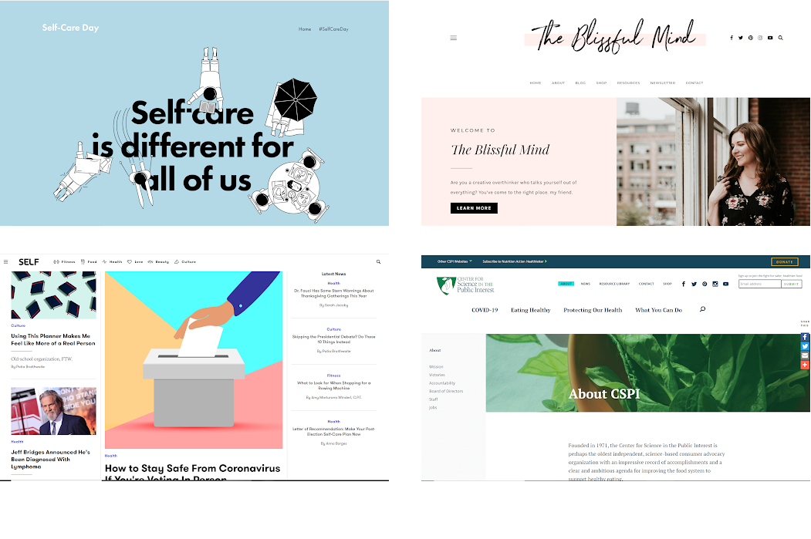
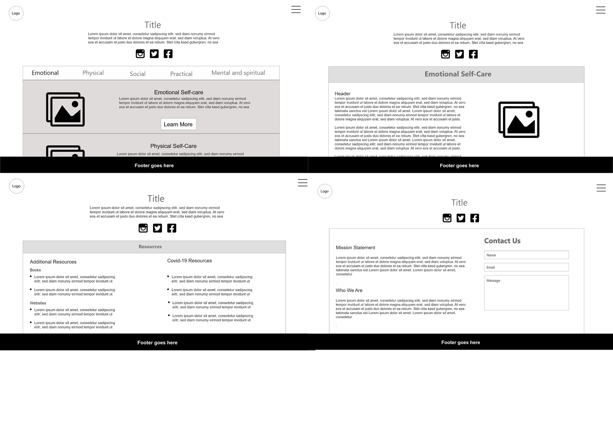
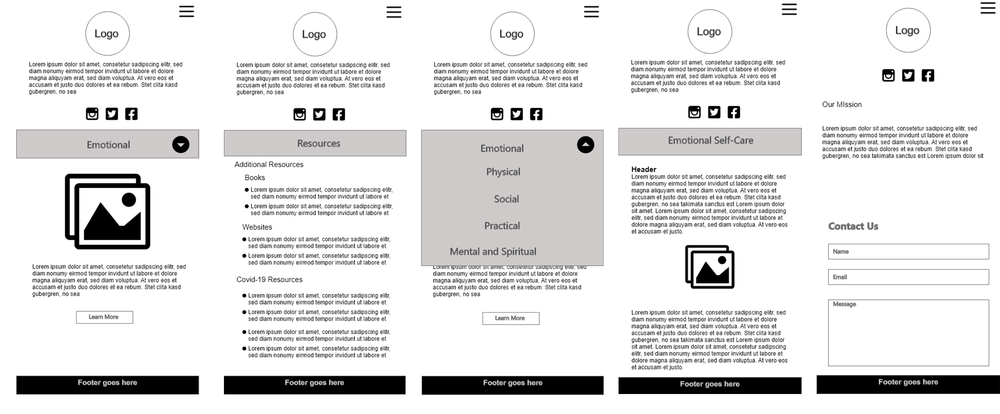
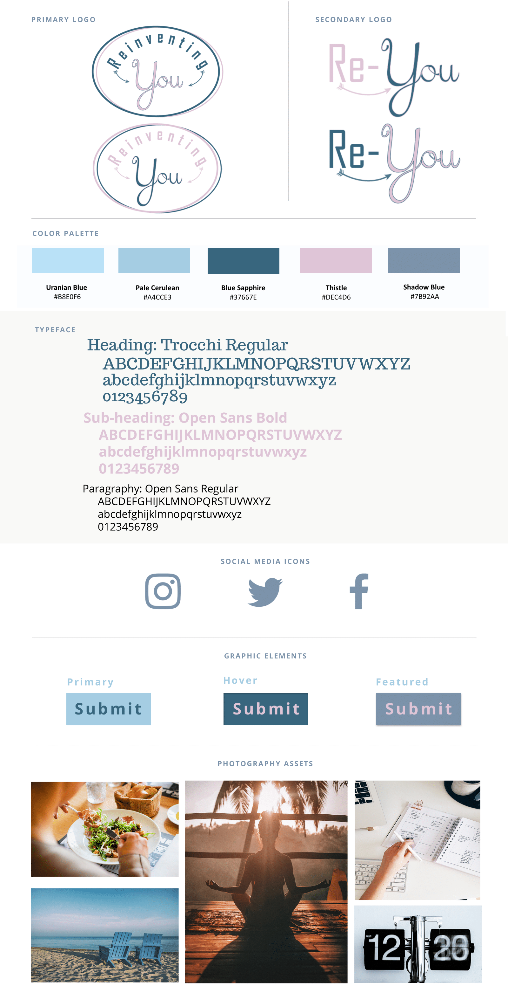

Overview
Reinventing You is an informational website that offer quality content that is relatable, especially during the CoronaVirus Pandemic. The website offers a refreshing perspective on self-care by consolidating guidelines on self-care topics including emotional, mental, and spiritual, social, practical, and physical.
This was a group project where I contributed as a project manager and as the UI/UX researcher. For this project, I also wrote a Case Study on my new approach on self-care content management.
Understanding the Problem
As a university student during a pandemic, I understand the struggle with self-care especially during a time where the internet has been a primary source of information, whether that information is reliable or not. The global pandemic has impacted almost every aspect of the world’s daily lives. My team and I focused on developing innovations to self-care sites .
Current Market Analysis:
- Social Media: Many existing social media platforms show only the positive, social media-friendly version of self-care. Social media accounts that are linked to many self-care websites are accounts owned by people that post about things like beauty tips, weight loss, and mental health. Much of the content posted on self-care accounts are for promotional purposes.
- Accessibiity: Certain self-care methods and practices are not accessibile to everyone espeically when it comes to self-care products or services such as spas or therapy. We aim to make our site reachable and relatable to everyone so that people have the option to practice self-care.
- Online Resources: We found multiple resources online that are trustworthy. CDC website on self-care is one of many that are easily accessible to users. We plan to promote these resources on our site.
Product Vision


The Design
Each design component was focused around a minimalist design.
Recommendations for both future content creation and additional social media integration
Social Media Integration
Reinventing You will have a social media presence on Facebook, Twitter, and Instagram. We have built a direct correlation between the main website and the three social media platforms by including social icons on every page of our website. Even though we are an informational website, we want to keep the content approachable to the audience. By Associating with social media platforms, we can further expand our website’s presence and connect with more people, thus bringing more awareness to proper self-care practices.
"Brands that ignore social media...will die. it's that simple."
- Account Profile: Consider adding a handle, profile picture, header image, and a Bio.
- Target Audience: Most social media users are millennials or Gen Z, so content needs to be bold and eye-popping. Avoid excessive association with Ad posts since most users tend to have a negative reaction to advertisements.
- Type of Content: Repost content from the main website. We suggest using Facebook and Instagram Live streaming tools to further engage with the users. This could be done by working with health care experts so people can ask questions in real time. Video content can have as much impact as written content.
Conduct Research on the Competition
The purpose of reinventing you is to provide information, rather than advice or opinion so it is in our best interest to conduct research on the competition. Understanding what the competitors are publishing will help determine what you need to include for Reinventing You’s future content updates. Currently, there is a lot of misguidance regarding dietary care on social media. To combat disinformation online, we suggest doing additional research on the topic and provide recommendations from professionals in the field. We also recommend including any references to external websites to increase credibility and make Reinventing You stand apart from its competitors.
- Focus on the problem: Focus on providing reliable content because it is the heart of the website.
- Don't worry too much about design: The site is an informational website so the design aspect does not need to be over the top to avoid taking attention away from the main idea.
Results and Takeaway
This is an early-stage development of a case stufy. It was an interesting experience personally as the team leader of the project, especially during a pandemic lock down.
Key takeaway